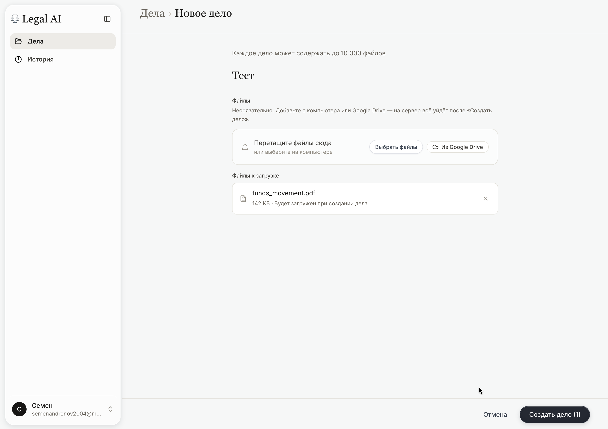
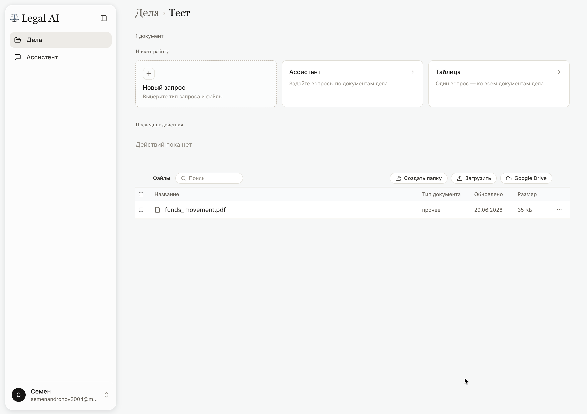
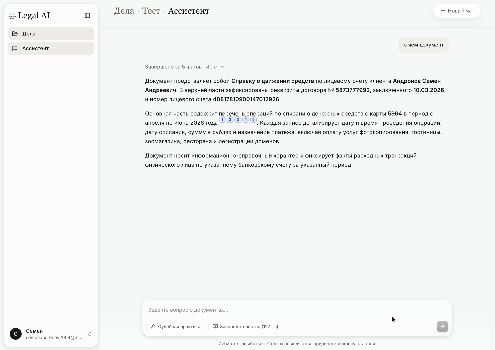
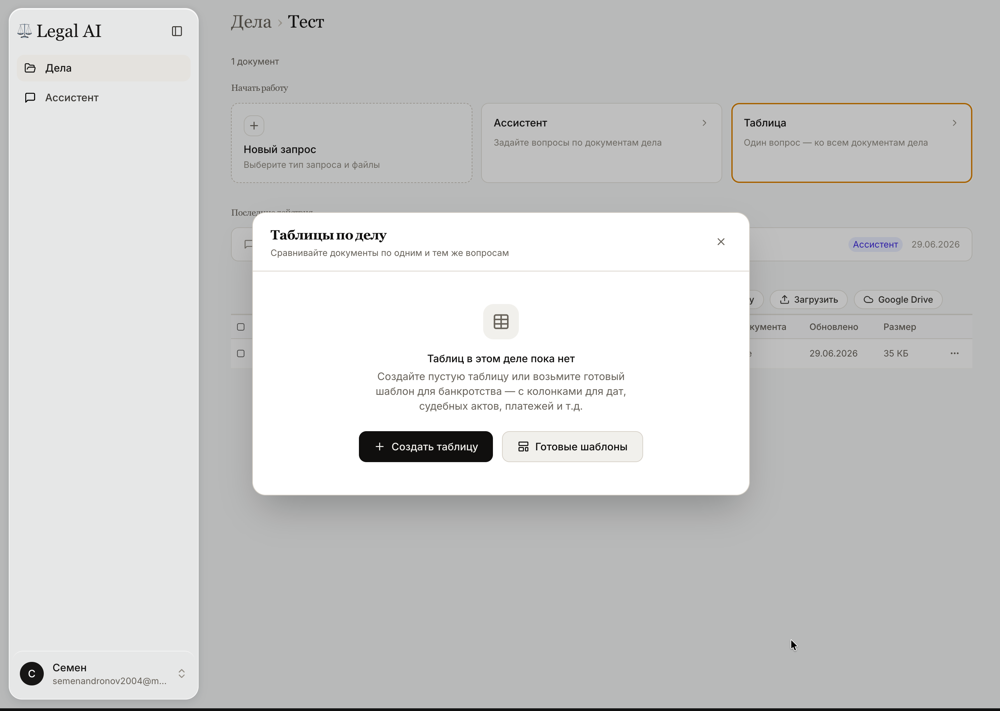
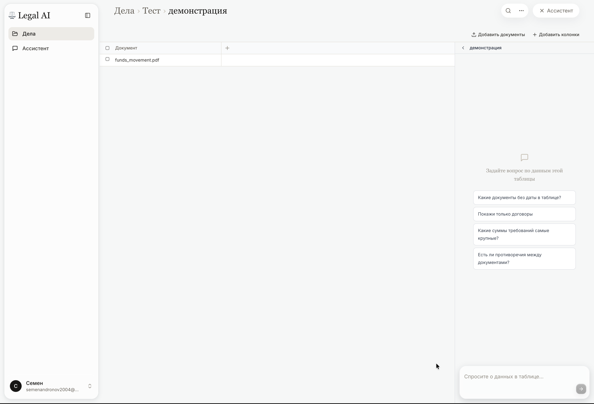
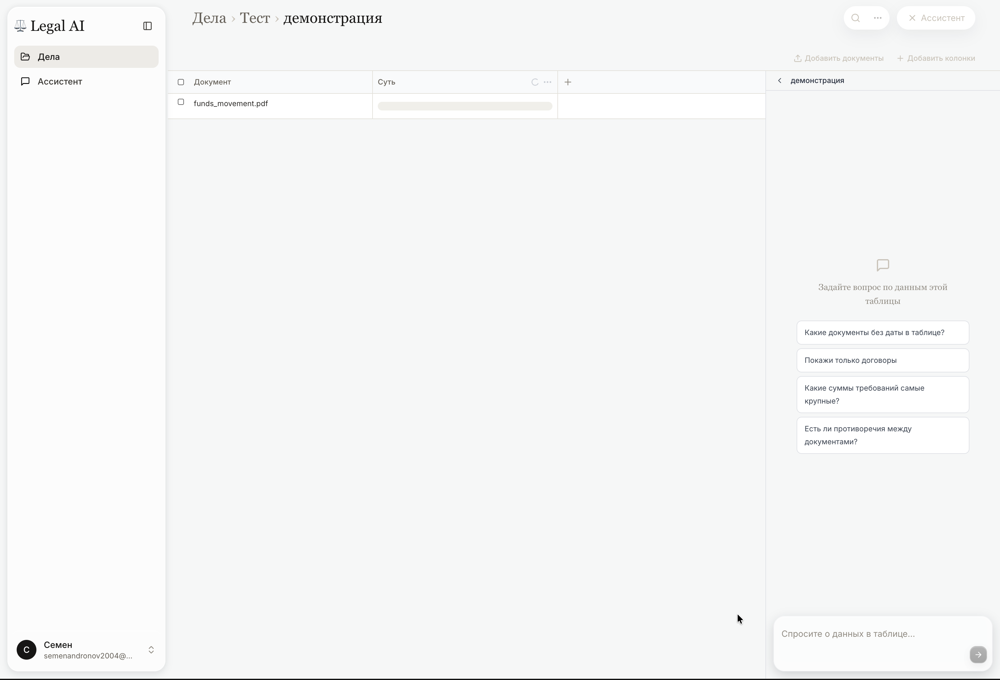
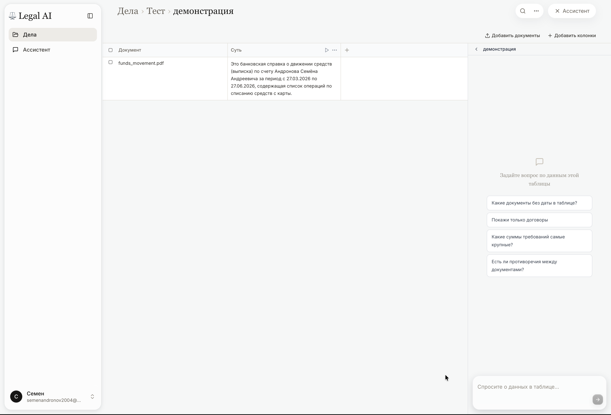
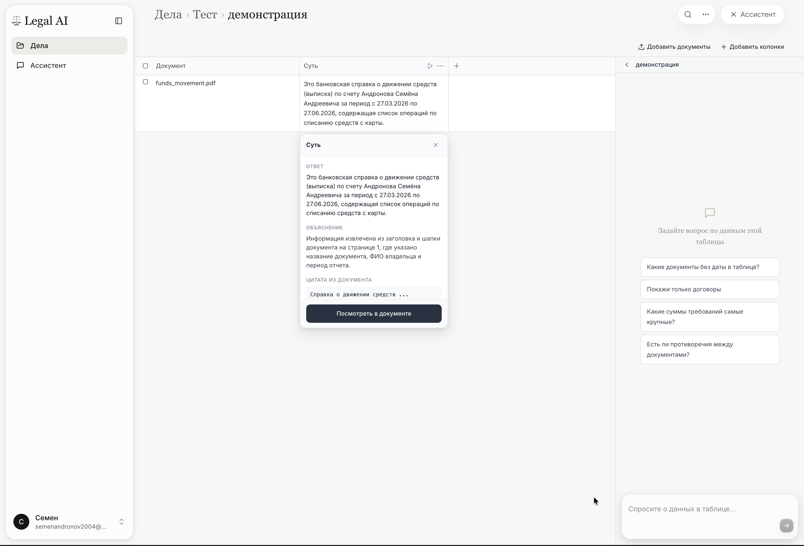
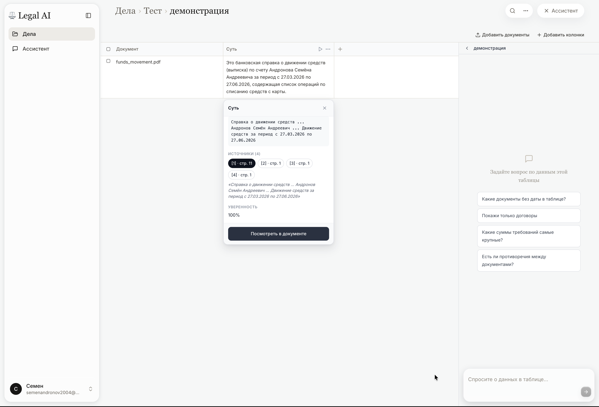

Legal AI Vault — сервис для работы с документами конкретного дела. Вы загружаете файлы (PDF, Word, сканы), а система помогает по ним искать ответы.
Кому подходит: юристам и арбитражным управляющим, которые ведут дела о банкротстве юридических лиц — когда нужно разобрать пачку материалов: судебные акты, требования кредиторов, договоры, выписки, отчёты ФУ.
Два рабочих режима внутри дела:
В обоих режимах к ответу можно перейти к фрагменту в оригинальном файле — чтобы проверить, откуда взят вывод.
Дело в системе — это отдельная «папка» под одно банкротное производство (или проект по нему).
funds_movement.pdf — так же можно добавить акты, требования, договоры.Если сейчас файлов нет — дело можно создать пустым и загрузить документы позже (см. стр. 3).

После создания дела открывается его главная страница. Здесь три способа начать работу:
Ниже — блок Файлы. Здесь видно, что уже загружено (на скриншоте — funds_movement.pdf). Кнопка «Загрузить» добавляет новые документы. Лишний файл можно убрать через меню «⋯» справа от названия файла.
После загрузки подождите несколько минут — системе нужно время, чтобы обработать новые файлы. Потом можно задавать вопросы.

Откройте дело → Ассистент. Введите вопрос в поле внизу и нажмите стрелку отправки.
Пример с экрана: вопрос «о чем документ». Система отвечает, что в деле есть справка о движении средств по счёту, указывает период, договор и перечень операций.
В ответе стоят синие цифры (1, 2, 3…). Это ссылки на фрагменты в документах.
Нажмите на цифру — откроется исходный PDF, нужное место будет подсвечено. Так вы проверяете, действительно ли в документе написано то, на что ссылается ответ.
Другие типичные вопросы: «перечисли стороны по договору поставки», «какая сумма в требовании кредитора», «есть ли в выписке платежи на ООО …».

Под полем ввода — два переключателя:
Важно: включить можно только один из этих режимов. Если включён 127‑ФЗ — кнопка «Судебная практика» неактивна, и наоборот.
Если оба выключены — ассистент отвечает только по документам, загруженным в это дело.
С включённым 127‑ФЗ: «какой срок созыва первого собрания кредиторов по ст. 72?»
С включённой практикой: «как суды оценивают существенность убытка при оспаривании сделки?»
На главной странице дела нажмите Таблица. Откроется окно «Таблицы по делу».
Зачем нужна таблица. В банкротстве часто десятки и сотни файлов. Вручную в каждом искать дату акта, сумму требования или тип документа — долго. Таблица задаёт один вопрос ко всем выбранным файлам и складывает ответы в одну таблицу — как сводная ведомость.
Как создать:
Шаблоны в системе: «Обзор документов дела», «Судебные акты», «Требования кредиторов», «Платежи и расчёты», «Согласия финансового управляющего», «План реструктуризации / меры».

Открыта таблица (на скриншоте — демонстрация). В ней одна строка — файл funds_movement.pdf.
«+ Добавить колонки» — новый вопрос ко всем строкам (например: «Дата документа», «Сумма требования»).
«+ Добавить документы» — включить в таблицу другие файлы из дела.
Ассистент справа — вопросы уже по заполненной таблице. Система сама предлагает варианты, например: «Какие документы без даты в таблице?», «Покажи только договоры», «Какие суммы требований самые крупные?»

Логика таблицы:
На скриншоте добавлена колонка «Суть» — вопрос: кратко описать, о чём документ. Система обрабатывает файл (в ячейке видна полоска загрузки).
Колонку можно задать вручную через «+» или взять из шаблона. Примеры колонок из шаблона «Требования кредиторов»: Кредитор, Сумма требования, Основание требования, Дата заявления.
Из шаблона «Судебные акты»: Тип судебного акта, Дата акта, Суд, Суть акта.

Когда колонка создана, нажмите треугольник ▶ в заголовке колонки. Система начнёт заполнять ячейки — по одной на каждый документ в таблице.
Пока идёт работа — в ячейке анимация загрузки. Когда готово — появляется текст ответа.
Результат на скриншоте (колонка «Суть», файл funds_movement.pdf):
«Это справка о движении средств (выписка) по счёту … за период с 27.03.2026 по 27.06.2026, содержащая перечень операций по списанию средств с карты».
Так же заполняются остальные колонки — каждая по своему вопросу, по каждому документу в таблице.

Нажмите на заполненную ячейку. Откроется окно:
Нажмите «Посмотреть в документе» или на номер источника — откроется PDF, фрагмент будет подсвечен. Сверьте ответ с оригиналом перед тем, как использовать его в заключении, таблице для суда или отчёте ФУ.

